Summary
This experiment investigates pwm motor control. Box-Behnken design to tune PWM frequency, dead time, and PID gain for torque ripple and efficiency.
The design varies 3 factors: pwm frequency khz (kHz), ranging from 5 to 50, dead time ns (ns), ranging from 100 to 2000, and pid gain kp (gain), ranging from 0.5 to 10.0. The goal is to optimize 2 responses: torque ripple pct (%) (minimize) and efficiency pct (%) (maximize). Fixed conditions held constant across all runs include motor type = bldc, driver = drv8305.
A Box-Behnken design was chosen because it efficiently fits quadratic models with 3 continuous factors while avoiding extreme corner combinations — requiring only 15 runs instead of the 8 needed for a full factorial at two levels.
Quadratic response surface models were fitted to capture potential curvature and factor interactions. The RSM contour plots below visualize how pairs of factors jointly affect each response.
Key Findings
For torque ripple pct, the most influential factors were dead time ns (45.7%), pid gain kp (29.4%), pwm frequency khz (24.9%). The best observed value was 5.6 (at pwm frequency khz = 5, dead time ns = 2000, pid gain kp = 5.25).
For efficiency pct, the most influential factors were dead time ns (48.4%), pid gain kp (30.4%), pwm frequency khz (21.2%). The best observed value was 91.8 (at pwm frequency khz = 27.5, dead time ns = 1050, pid gain kp = 5.25).
Recommended Next Steps
- Run confirmation experiments at the predicted optimal settings to validate the model.
- Consider whether any fixed factors should be varied in a future study.
Experimental Setup
Factors
| Factor | Low | High | Unit |
|---|
pwm_frequency_khz | 5 | 50 | kHz |
dead_time_ns | 100 | 2000 | ns |
pid_gain_kp | 0.5 | 10.0 | gain |
Fixed: motor_type = bldc, driver = drv8305
Responses
| Response | Direction | Unit |
|---|
torque_ripple_pct | ↓ minimize | % |
efficiency_pct | ↑ maximize | % |
Configuration
{
"metadata": {
"name": "PWM Motor Control",
"description": "Box-Behnken design to tune PWM frequency, dead time, and PID gain for torque ripple and efficiency"
},
"factors": [
{
"name": "pwm_frequency_khz",
"levels": [
"5",
"50"
],
"type": "continuous",
"unit": "kHz"
},
{
"name": "dead_time_ns",
"levels": [
"100",
"2000"
],
"type": "continuous",
"unit": "ns"
},
{
"name": "pid_gain_kp",
"levels": [
"0.5",
"10.0"
],
"type": "continuous",
"unit": "gain"
}
],
"fixed_factors": {
"motor_type": "bldc",
"driver": "drv8305"
},
"responses": [
{
"name": "torque_ripple_pct",
"optimize": "minimize",
"unit": "%"
},
{
"name": "efficiency_pct",
"optimize": "maximize",
"unit": "%"
}
],
"settings": {
"operation": "box_behnken",
"test_script": "use_cases/73_pwm_motor_control/sim.sh"
}
}
Experimental Matrix
The Box-Behnken Design produces 15 runs. Each row is one experiment with specific factor settings.
| Run | pwm_frequency_khz | dead_time_ns | pid_gain_kp |
|---|
| 1 | 27.5 | 100 | 0.5 |
| 2 | 27.5 | 1050 | 5.25 |
| 3 | 50 | 1050 | 10 |
| 4 | 50 | 1050 | 0.5 |
| 5 | 27.5 | 1050 | 5.25 |
| 6 | 27.5 | 1050 | 5.25 |
| 7 | 5 | 1050 | 10 |
| 8 | 50 | 100 | 5.25 |
| 9 | 27.5 | 100 | 10 |
| 10 | 50 | 2000 | 5.25 |
| 11 | 5 | 1050 | 0.5 |
| 12 | 27.5 | 2000 | 10 |
| 13 | 5 | 100 | 5.25 |
| 14 | 5 | 2000 | 5.25 |
| 15 | 27.5 | 2000 | 0.5 |
Step-by-Step Workflow
1
Preview the design
$ doe info --config use_cases/73_pwm_motor_control/config.json
2
Generate the runner script
$ doe generate --config use_cases/73_pwm_motor_control/config.json \
--output use_cases/73_pwm_motor_control/results/run.sh --seed 42
3
Execute the experiments
$ bash use_cases/73_pwm_motor_control/results/run.sh
4
Analyze results
$ doe analyze --config use_cases/73_pwm_motor_control/config.json
5
Get optimization recommendations
$ doe optimize --config use_cases/73_pwm_motor_control/config.json
6
Multi-objective optimization
With 2 competing responses, use --multi to find the best compromise via Derringer–Suich desirability.
$ doe optimize --config use_cases/73_pwm_motor_control/config.json --multi
7
Generate the HTML report
$ doe report --config use_cases/73_pwm_motor_control/config.json \
--output use_cases/73_pwm_motor_control/results/report.html
Features Exercised
| Feature | Value |
|---|
| Design type | box_behnken |
| Factor types | continuous (all 3) |
| Arg style | double-dash |
| Responses | 2 (torque_ripple_pct ↓, efficiency_pct ↑) |
| Total runs | 15 |
Analysis Results
Generated from actual experiment runs using the DOE Helper Tool.
Response: torque_ripple_pct
Top factors: dead_time_ns (45.7%), pid_gain_kp (29.4%), pwm_frequency_khz (24.9%).
ANOVA
| Source | DF | SS | MS | F | p-value |
|---|
| Source | DF | SS | MS | F | p-value |
| pwm_frequency_khz | 2 | 35.1479 | 17.5739 | 0.854 | 0.4612 |
| dead_time_ns | 2 | 87.4282 | 43.7141 | 2.124 | 0.1820 |
| pid_gain_kp | 2 | 46.5425 | 23.2713 | 1.131 | 0.3695 |
| Lack | of | Fit | 6 | 72.2748 | 12.0458 |
| Pure | Error | 2 | 41.1667 | | |
| Error | 8 | 113.4414 | 20.5833 | | |
| Total | 14 | 282.5600 | 20.1829 | | |
Pareto Chart
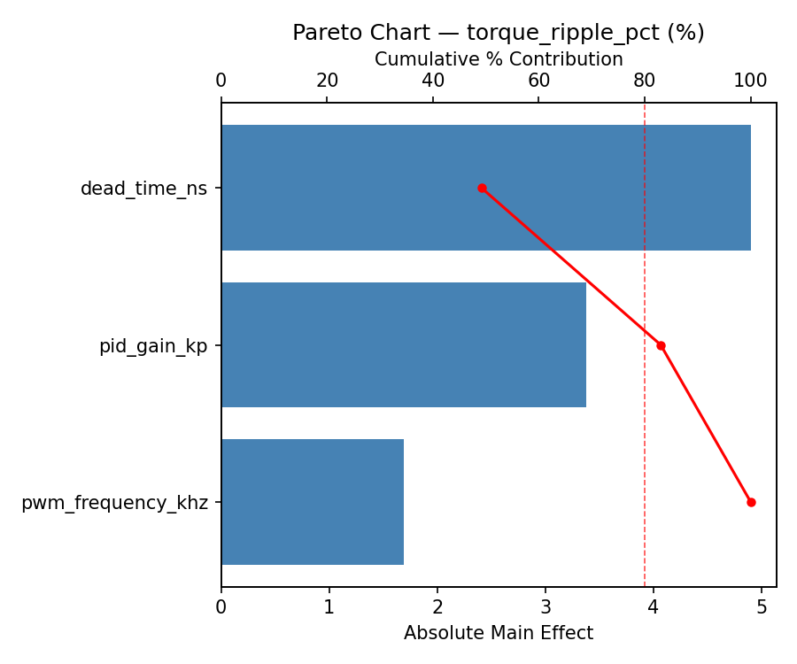
Main Effects Plot

Normal Probability Plot of Effects
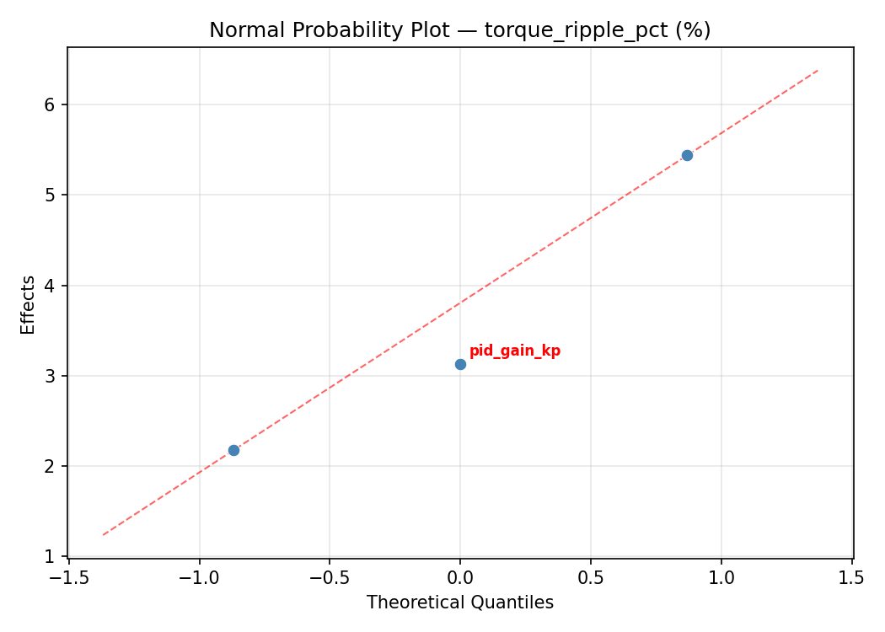
Half-Normal Plot of Effects
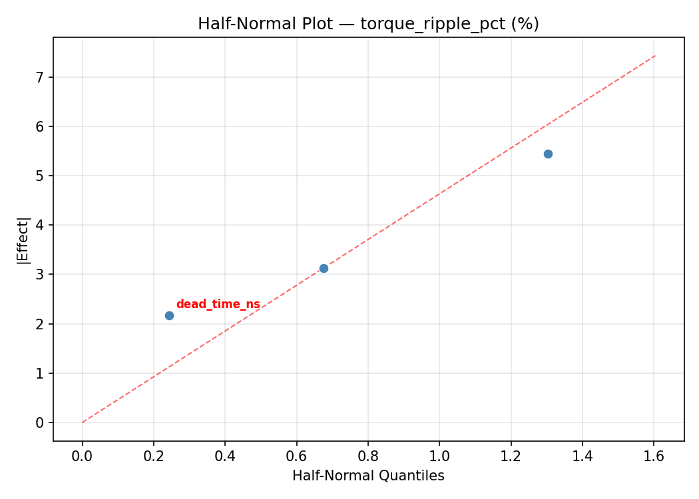
Model Diagnostics
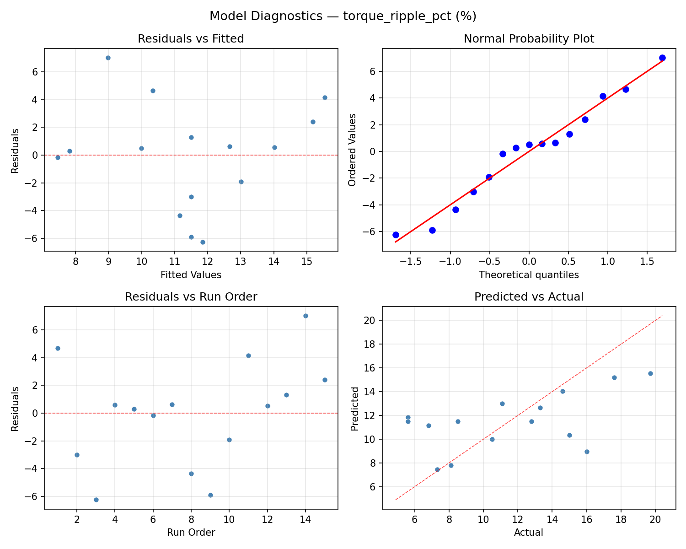
Response: efficiency_pct
Top factors: dead_time_ns (48.4%), pid_gain_kp (30.4%), pwm_frequency_khz (21.2%).
ANOVA
| Source | DF | SS | MS | F | p-value |
|---|
| Source | DF | SS | MS | F | p-value |
| pwm_frequency_khz | 2 | 20.8188 | 10.4094 | 0.920 | 0.4371 |
| dead_time_ns | 2 | 89.3398 | 44.6699 | 3.946 | 0.0642 |
| pid_gain_kp | 2 | 55.4298 | 27.7149 | 2.448 | 0.1481 |
| Lack | of | Fit | 6 | 99.7689 | 16.6282 |
| Pure | Error | 2 | 22.6400 | | |
| Error | 8 | 122.4089 | 11.3200 | | |
| Total | 14 | 287.9973 | 20.5712 | | |
Pareto Chart

Main Effects Plot

Normal Probability Plot of Effects
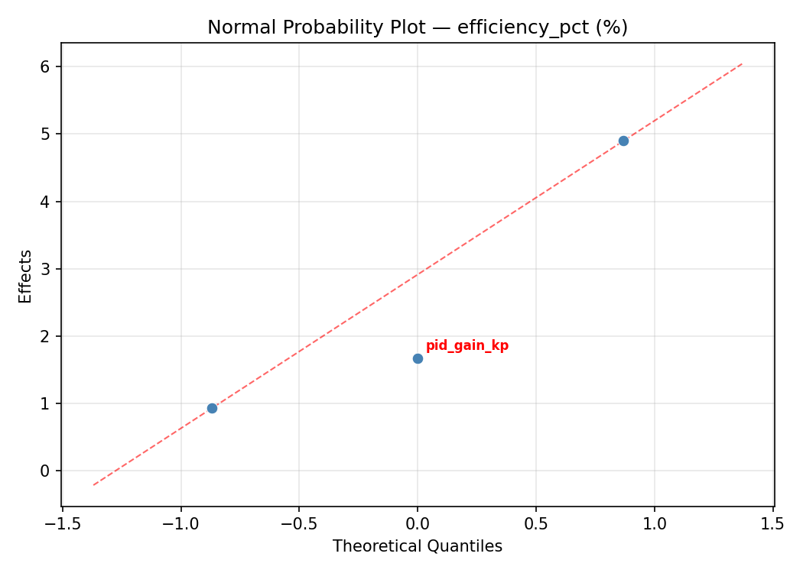
Half-Normal Plot of Effects
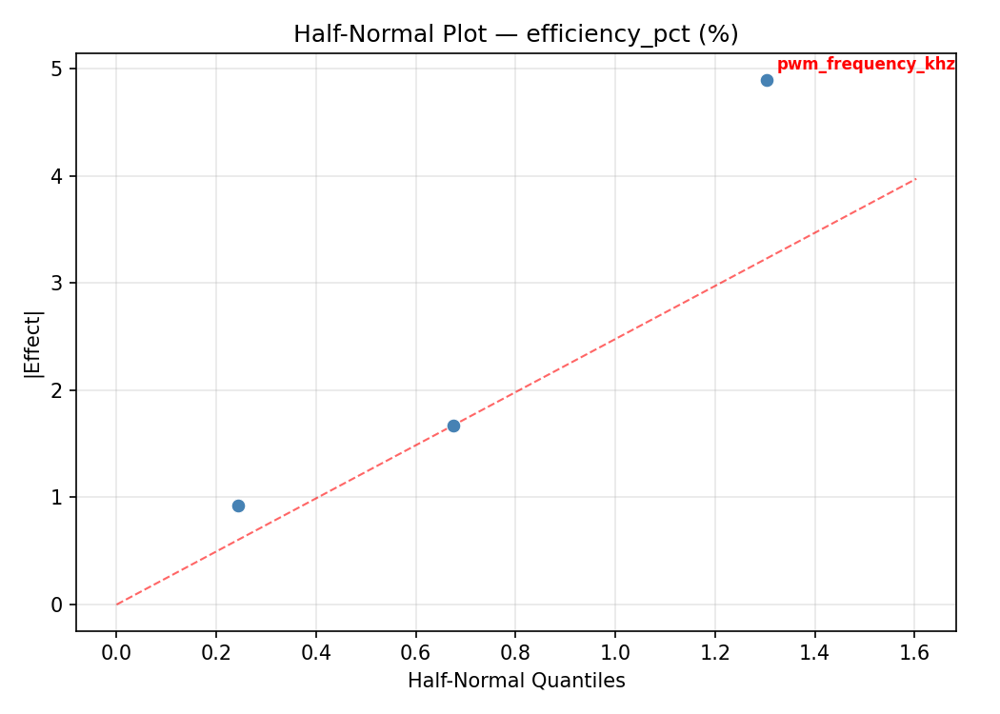
Model Diagnostics
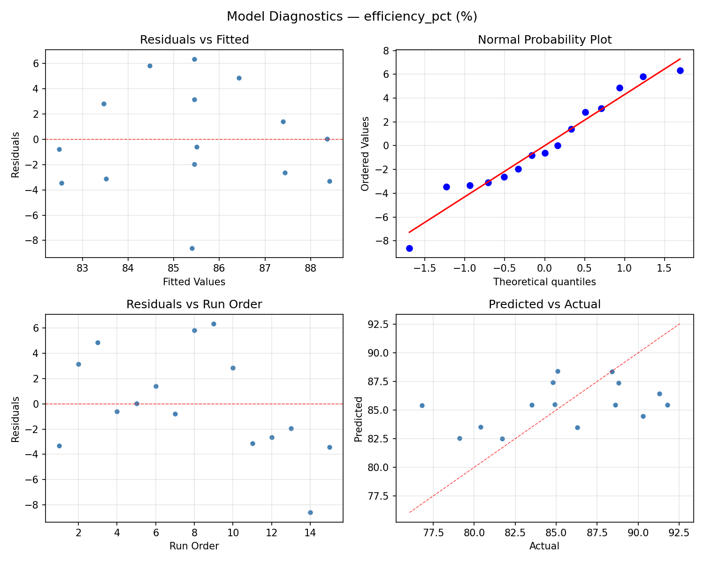
Response Surface Plots
3D surfaces fitted with quadratic RSM. Red dots are observed data points.
efficiency pct dead time ns vs pid gain kp
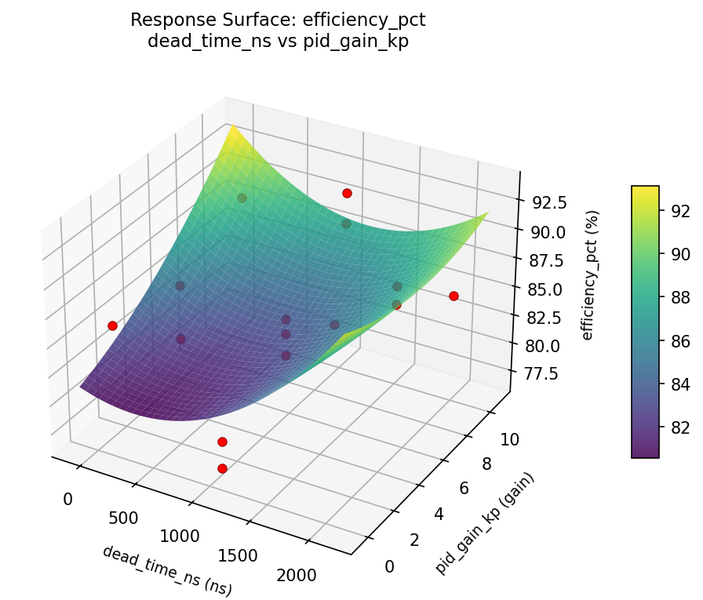
efficiency pct pwm frequency khz vs dead time ns

efficiency pct pwm frequency khz vs pid gain kp
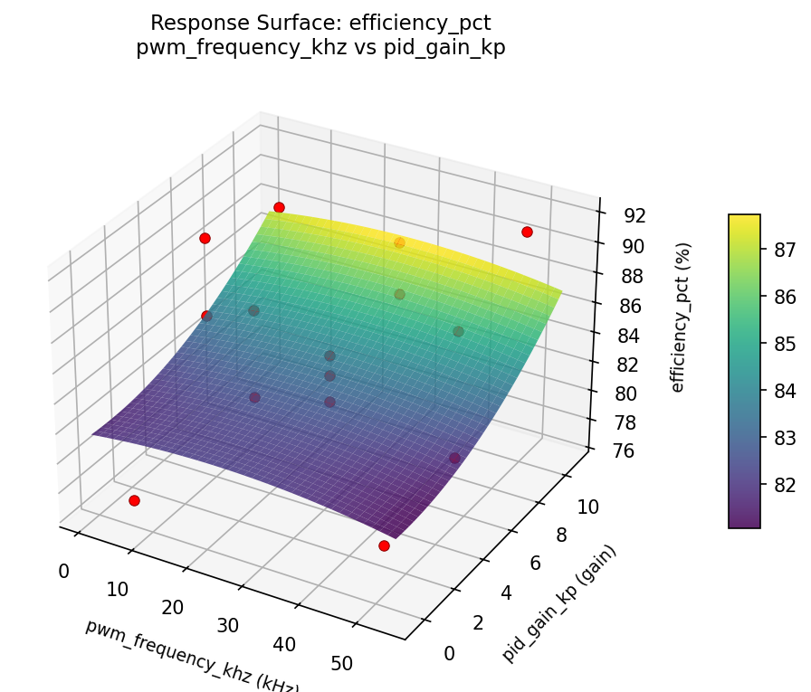
torque ripple pct dead time ns vs pid gain kp
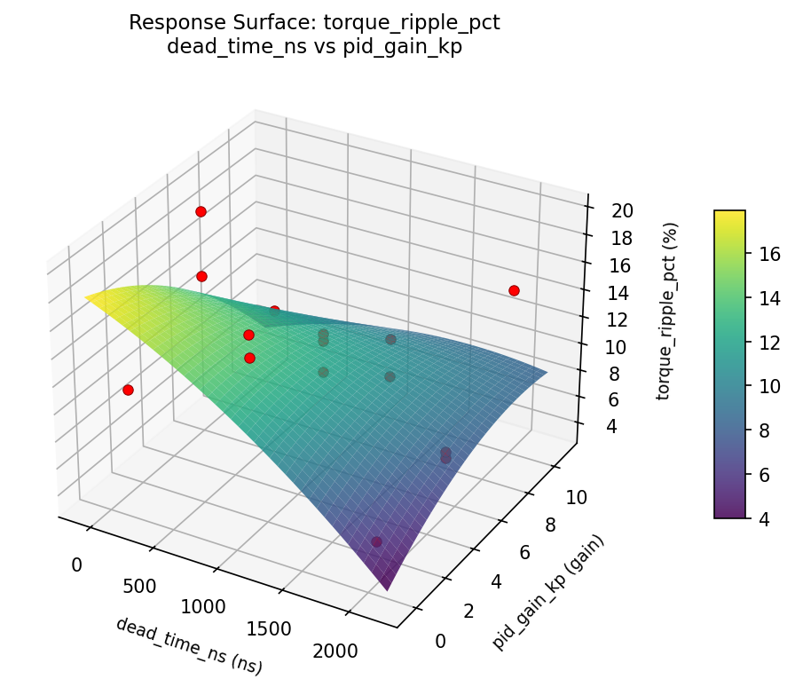
torque ripple pct pwm frequency khz vs dead time ns

torque ripple pct pwm frequency khz vs pid gain kp
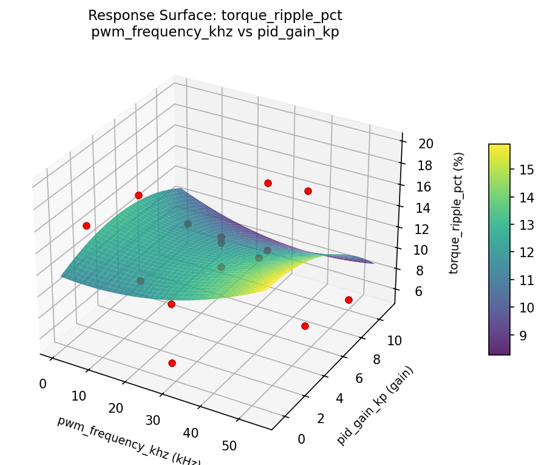
Multi-Objective Optimization
When responses compete, Derringer–Suich desirability finds the best compromise.
Each response is scaled to a 0–1 desirability, then combined via a weighted geometric mean.
Overall Desirability
D = 0.9545
Per-Response Desirability
| Response | Weight | Desirability | Predicted | Dir |
|---|
torque_ripple_pct |
1.0 |
|
5.60 0.9545 5.60 % |
↓ |
efficiency_pct |
1.5 |
|
91.80 0.9545 91.80 % |
↑ |
Recommended Settings
| Factor | Value |
|---|
pwm_frequency_khz | 50 kHz |
dead_time_ns | 2000 ns |
pid_gain_kp | 5.25 gain |
Source: from observed run #9
Trade-off Summary
Sacrifice = how much worse than single-objective best.
| Response | Predicted | Best Observed | Sacrifice |
|---|
efficiency_pct | 91.80 | 91.80 | +0.00 |
Top 3 Runs by Desirability
| Run | D | Factor Settings |
|---|
| #3 | 0.9362 | pwm_frequency_khz=27.5, dead_time_ns=1050, pid_gain_kp=5.25 |
| #8 | 0.8690 | pwm_frequency_khz=5, dead_time_ns=2000, pid_gain_kp=5.25 |
Model Quality
| Response | R² | Type |
|---|
efficiency_pct | 0.7649 | quadratic |
Full Multi-Objective Output
============================================================
MULTI-OBJECTIVE OPTIMIZATION
Method: Derringer-Suich Desirability Function
============================================================
Overall desirability: D = 0.9545
Response Weight Desirability Predicted Direction
---------------------------------------------------------------------
torque_ripple_pct 1.0 0.9545 5.60 % ↓
efficiency_pct 1.5 0.9545 91.80 % ↑
Recommended settings:
pwm_frequency_khz = 50 kHz
dead_time_ns = 2000 ns
pid_gain_kp = 5.25 gain
(from observed run #9)
Trade-off summary:
torque_ripple_pct: 5.60 (best observed: 5.60, sacrifice: +0.00)
efficiency_pct: 91.80 (best observed: 91.80, sacrifice: +0.00)
Model quality:
torque_ripple_pct: R² = 0.3605 (linear)
efficiency_pct: R² = 0.7649 (quadratic)
Top 3 observed runs by overall desirability:
1. Run #9 (D=0.9545): pwm_frequency_khz=50, dead_time_ns=2000, pid_gain_kp=5.25
2. Run #3 (D=0.9362): pwm_frequency_khz=27.5, dead_time_ns=1050, pid_gain_kp=5.25
3. Run #8 (D=0.8690): pwm_frequency_khz=5, dead_time_ns=2000, pid_gain_kp=5.25
Full Analysis Output
=== Main Effects: torque_ripple_pct ===
Factor Effect Std Error % Contribution
--------------------------------------------------------------
dead_time_ns 6.5750 1.1600 45.7%
pid_gain_kp 4.2250 1.1600 29.4%
pwm_frequency_khz 3.5821 1.1600 24.9%
=== ANOVA Table: torque_ripple_pct ===
Source DF SS MS F p-value
-----------------------------------------------------------------------------
pwm_frequency_khz 2 35.1479 17.5739 0.854 0.4612
dead_time_ns 2 87.4282 43.7141 2.124 0.1820
pid_gain_kp 2 46.5425 23.2713 1.131 0.3695
Lack of Fit 6 72.2748 12.0458 0.585 0.7414
Pure Error 2 41.1667 20.5833
Error 8 113.4414 20.5833
Total 14 282.5600 20.1829
=== Summary Statistics: torque_ripple_pct ===
pwm_frequency_khz:
Level N Mean Std Min Max
------------------------------------------------------------
27.5 7 12.5571 4.7871 5.6000 19.7000
5 4 8.9750 2.9703 6.8000 13.3000
50 4 12.1750 5.2741 5.6000 17.6000
dead_time_ns:
Level N Mean Std Min Max
------------------------------------------------------------
100 4 15.0250 5.6888 6.8000 19.7000
1050 7 11.2286 3.4048 5.6000 15.0000
2000 4 8.4500 3.0817 5.6000 12.8000
pid_gain_kp:
Level N Mean Std Min Max
------------------------------------------------------------
0.5 4 11.9500 3.2213 8.5000 16.0000
10 4 14.0250 4.7884 8.1000 19.7000
5.25 7 9.8000 4.7627 5.6000 17.6000
=== Main Effects: efficiency_pct ===
Factor Effect Std Error % Contribution
--------------------------------------------------------------
dead_time_ns 6.4750 1.1711 48.4%
pid_gain_kp 4.0750 1.1711 30.4%
pwm_frequency_khz 2.8357 1.1711 21.2%
=== ANOVA Table: efficiency_pct ===
Source DF SS MS F p-value
-----------------------------------------------------------------------------
pwm_frequency_khz 2 20.8188 10.4094 0.920 0.4371
dead_time_ns 2 89.3398 44.6699 3.946 0.0642
pid_gain_kp 2 55.4298 27.7149 2.448 0.1481
Lack of Fit 6 99.7689 16.6282 1.469 0.4586
Pure Error 2 22.6400 11.3200
Error 8 122.4089 11.3200
Total 14 287.9973 20.5712
=== Summary Statistics: efficiency_pct ===
pwm_frequency_khz:
Level N Mean Std Min Max
------------------------------------------------------------
27.5 7 84.5143 4.8640 76.8000 91.3000
5 4 87.3500 3.8423 81.7000 90.3000
50 4 85.2000 5.1942 79.1000 91.8000
dead_time_ns:
Level N Mean Std Min Max
------------------------------------------------------------
100 4 81.6500 5.9557 76.8000 90.3000
1050 7 86.1000 3.0773 81.7000 91.3000
2000 4 88.1250 3.4364 83.5000 91.8000
pid_gain_kp:
Level N Mean Std Min Max
------------------------------------------------------------
0.5 4 83.4250 4.9182 76.8000 88.6000
10 4 83.9000 3.5954 80.4000 88.4000
5.25 7 87.5000 4.4948 79.1000 91.8000
Optimization Recommendations
=== Optimization: torque_ripple_pct ===
Direction: minimize
Best observed run: #3
pwm_frequency_khz = 5
dead_time_ns = 2000
pid_gain_kp = 5.25
Value: 5.6
RSM Model (linear, R² = 0.3162, Adj R² = 0.1297):
Coefficients:
intercept +11.5000
pwm_frequency_khz +2.4875
dead_time_ns -0.5500
pid_gain_kp -2.1625
RSM Model (quadratic, R² = 0.7650, Adj R² = 0.3419):
Coefficients:
intercept +11.1333
pwm_frequency_khz +2.4875
dead_time_ns -0.5500
pid_gain_kp -2.1625
pwm_frequency_khz*dead_time_ns +5.1500
pwm_frequency_khz*pid_gain_kp -2.0750
dead_time_ns*pid_gain_kp -0.4000
pwm_frequency_khz^2 +0.0208
dead_time_ns^2 +0.8458
pid_gain_kp^2 -0.1792
Curvature analysis:
dead_time_ns coef=+0.8458 convex (has a minimum)
pid_gain_kp coef=-0.1792 concave (has a maximum)
pwm_frequency_khz coef=+0.0208 negligible curvature
Notable interactions:
pwm_frequency_khz*dead_time_ns coef=+5.1500 (synergistic)
pwm_frequency_khz*pid_gain_kp coef=-2.0750 (antagonistic)
dead_time_ns*pid_gain_kp coef=-0.4000 (antagonistic)
Predicted optimum (from quadratic model, at observed points):
pwm_frequency_khz = 50
dead_time_ns = 2000
pid_gain_kp = 5.25
Predicted value: 19.0875
Surface optimum (via L-BFGS-B, quadratic model):
pwm_frequency_khz = 5
dead_time_ns = 2000
pid_gain_kp = 10
Predicted value: 3.1458
Model quality: Good fit — general trends are captured, some noise remains.
Factor importance:
1. pwm_frequency_khz (effect: 5.0, contribution: 46.5%)
2. pid_gain_kp (effect: 4.3, contribution: 40.4%)
3. dead_time_ns (effect: 1.4, contribution: 13.1%)
=== Optimization: efficiency_pct ===
Direction: maximize
Best observed run: #9
pwm_frequency_khz = 27.5
dead_time_ns = 1050
pid_gain_kp = 5.25
Value: 91.8
RSM Model (linear, R² = 0.4545, Adj R² = 0.3057):
Coefficients:
intercept +85.4533
pwm_frequency_khz -2.6125
dead_time_ns +0.9125
pid_gain_kp +2.9500
RSM Model (quadratic, R² = 0.7324, Adj R² = 0.2508):
Coefficients:
intercept +86.8000
pwm_frequency_khz -2.6125
dead_time_ns +0.9125
pid_gain_kp +2.9500
pwm_frequency_khz*dead_time_ns -3.6000
pwm_frequency_khz*pid_gain_kp +1.4750
dead_time_ns*pid_gain_kp -0.2250
pwm_frequency_khz^2 +0.5000
dead_time_ns^2 -1.0500
pid_gain_kp^2 -1.9750
Curvature analysis:
pid_gain_kp coef=-1.9750 concave (has a maximum)
dead_time_ns coef=-1.0500 concave (has a maximum)
pwm_frequency_khz coef=+0.5000 convex (has a minimum)
Notable interactions:
pwm_frequency_khz*dead_time_ns coef=-3.6000 (antagonistic)
pwm_frequency_khz*pid_gain_kp coef=+1.4750 (synergistic)
Predicted optimum (from linear model, at observed points):
pwm_frequency_khz = 5
dead_time_ns = 1050
pid_gain_kp = 10
Predicted value: 91.0158
Surface optimum (via L-BFGS-B, linear model):
pwm_frequency_khz = 5
dead_time_ns = 2000
pid_gain_kp = 10
Predicted value: 91.9283
Model quality: Weak fit — consider adding center points or using a different design.
Factor importance:
1. pid_gain_kp (effect: 5.9, contribution: 45.4%)
2. pwm_frequency_khz (effect: 5.2, contribution: 40.2%)
3. dead_time_ns (effect: 1.9, contribution: 14.3%)